日本三大新四国霊場のひとつ福岡は篠栗四国霊場の一番札所、南蔵院。
地元では「篠栗のねぼとけさん」といった方が通りがいいようである。何故なら、一般人にとってこの寺が巡礼の札所かどうかは知らなくても、そこにおわす巨大な涅槃像は町一番の名物だからだ。
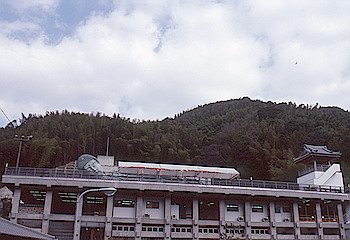
ここの涅槃像、全長41ｍ高さ11ｍ重さ300tという巨大なもので、ブロンズ製では世界一との事。
何でもここの寺は以前よりミャンマーやネパールで福祉活動を展開して来たのだが、その御礼にミャンマーの仏教会から仏舎利を貰い受ける際、その仏舎利を収めるハコものがないのでこの巨大涅槃像を造ったそうな。豪快である。
さらにここの住職の豪快さは、宝くじで当てた1億5000万円を福祉団体にポーンと全額寄付してしまうといった「伝説」にもよく表れている。
さて、その豪快住職の豪快涅槃像だが、これがまたいいリラックス具合なのだ。全国津々浦々で見かける立像の大観音ものなどは必ず威圧的なのだが、ここのは涅槃像ということもあって親しみが湧いてくる。
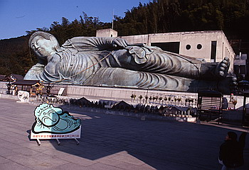 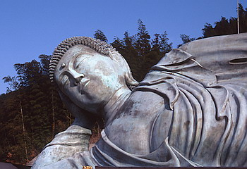
余談だが、この涅槃像の開眼法要には1000人の僧侶が参列したとの事で、その写真を見たのだが、これがふんぞり返る位凄かった。ダラ〜ンと寝ている寝釈迦の前で真面目に拝む坊主1000人の図。これは笑った。ぜひ絵葉書にして戴きたいものである。
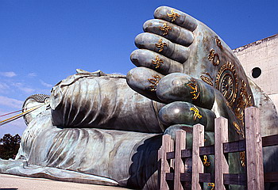 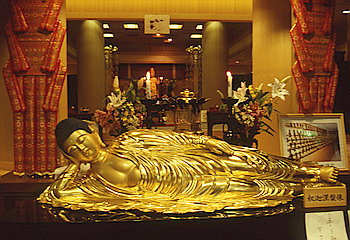
で、胎内の仏舎利（最近になって公開された）や仏足（足の裏のこと）などがこの涅槃像の見所なのだがこれだけを見て後満悦して帰ることのないように。
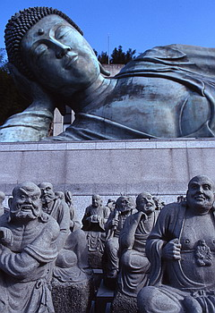
この南蔵院、まだまだ奥が深いのである。そして豪快な割には結構商売上手でもあるのだ。
まずは涅槃像の真下にある建物。そこは中央に人工の川などが流れていてちょっと洒落た和風旅館のロビーのような雰囲気で、片方は納骨堂、そしてもう一方にはお土産屋が並んでいる。
地元の特産品や仏教用具に混じって涅槃像のレプリカやキーホルダーなどの渋いグッズもちらほら。
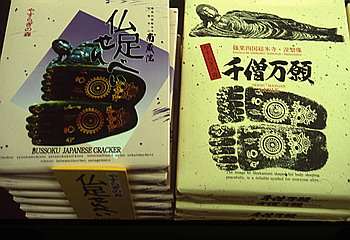 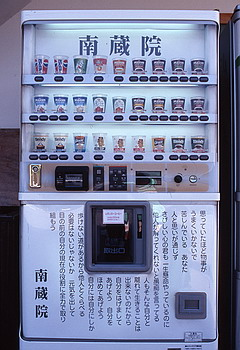
ふと見ると南蔵院オリジナルプリクラがあるではないか。
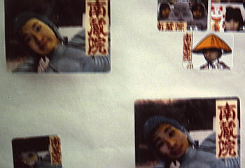
早速同行した子供達にやらせる。背景は勿論涅槃像バージョン（他にはアベック用の2体地蔵バージョンなども有り）。涅槃像の顔の部分に写る人の顔がはめ込まれるというもので、寝釈迦だけに顔の角度を合わせるのが結構難しかったりするが、仕上がった写真は爆笑モノ。
今まで出会ったプリクラの中でも最高に楽しいものだった。
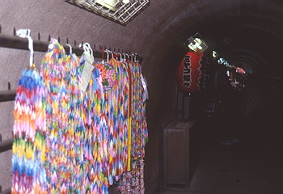
その建物を出て、通路を歩いて行くとトンネルがある。その名も七福神トンネル。
トンネル中央に七福神が祭られているのだが、そのトンネル内部の壁には参拝記念のネームプレートがびっしりと張り付けられているのだ（勿論有料）。そして何故か七福神のところにはミヤコ蝶々奉納の堤灯が。
トンネルを挟んで涅槃像のある東側を新エリアとすれば、トンネルを抜けた西側は本堂のある旧エリアといえよう。新エリアのメインが涅槃像であったのに対し、旧エリアのメインは不動明王。
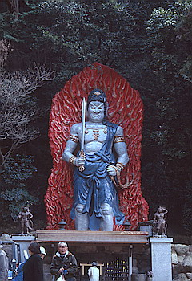 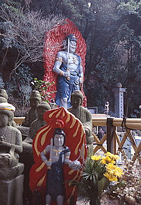
本堂横の広場にデーンと立つ不動さまは高さ11ｍ、コンクリートにペンキ塗りで結構キッチュ。
その横からお山巡りが始まる。何故か五百羅漢（参拝者奉納、当然有料）が並ぶミニ高野山巡りがあり、その奥は胎内潜り風の岩場、そこを抜けると不動の滝といわれる落差5・程の滝に出る。
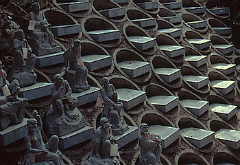 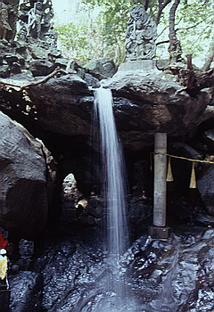
その横には不動霊水窟という岩窟があり不動さまを祭った内部は湿気と線香の煙が入り交じる異空間。これらが全て50ｍ四方に納まっているという超濃密空間なのである。
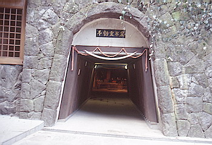
そして大師堂と本堂にお参りを済ませると一通りの南蔵院ツアーは無事終了。
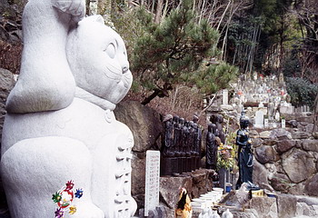
しかしその他にもわらべ地蔵やら巨大招き猫やら水掛け地蔵やらと異常とも言える程の参拝スポットてんこ盛り状態。そう言えば篠栗四国霊場巡りの人達はその他にも境内にある幾つかの札所にも行かなきゃならないのか、うむ〜、こりゃ大変だ。
珍寺大道場 HOME